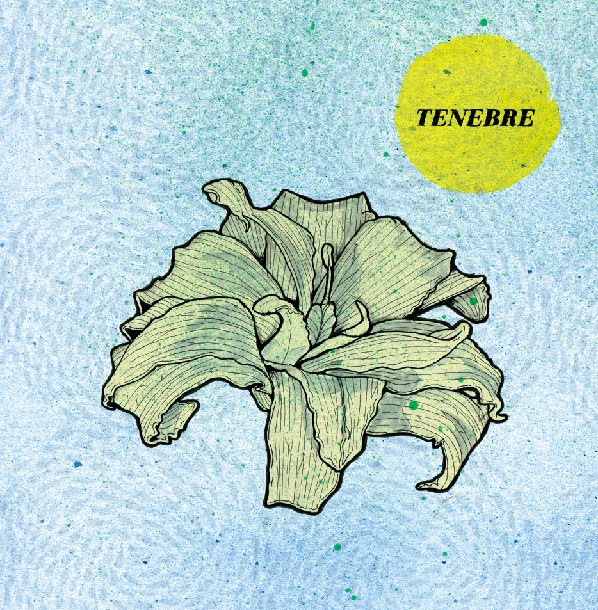

A post/math rock from the US. Taking their cues from 33.3, Don Caballero and Owls, the instrumental trio Tenebre have established themselves in the movement of San Francisco post-punk spearheaded by bands such as Deerhoof and The Aislers Set. Anything but a typical indie post-rock act, Tenebre are more concerned with creating beautiful soundscapes than imitating their influences. Both aggressive and subdued, flashy and tasteful, technically stunning and sincere, Tenebre’s dense rhythmic structures, fluttering fret-tapped guitarwork, complex harmonization and dynamic instrumental interplay create a unique listening experience, equally impressive and beautiful.
